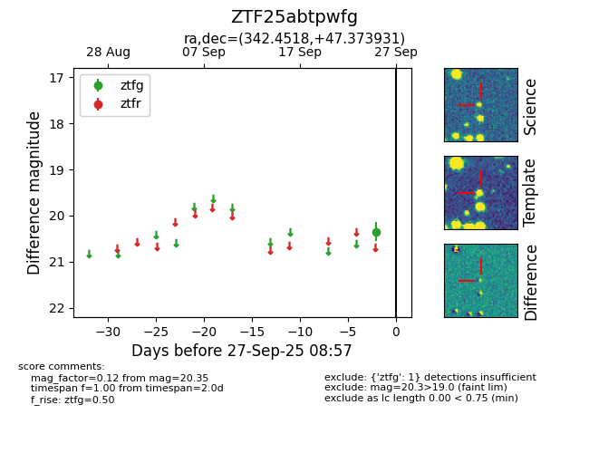

FINK: ZTF25abtpwfg
Lasair: ZTF25abtpwfg
ALeRCE: ZTF25abtpwfg
ZTF25abtpwfg (ztf,fink)
equatorial (ra, dec) = (342.4518,+47.37393)
galactic (l, b) = (102.5215,-10.62012)

last ztfg=20.35
1 ztfg detections